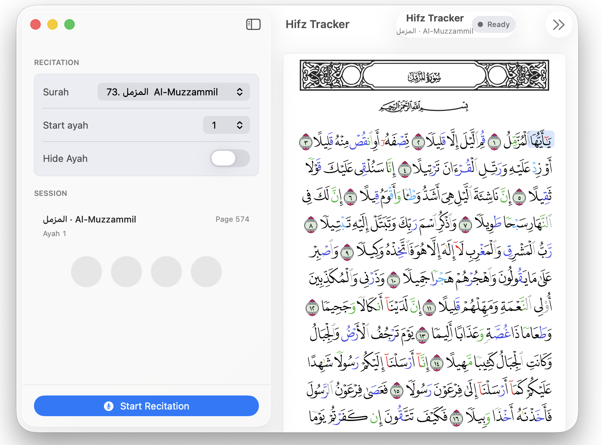
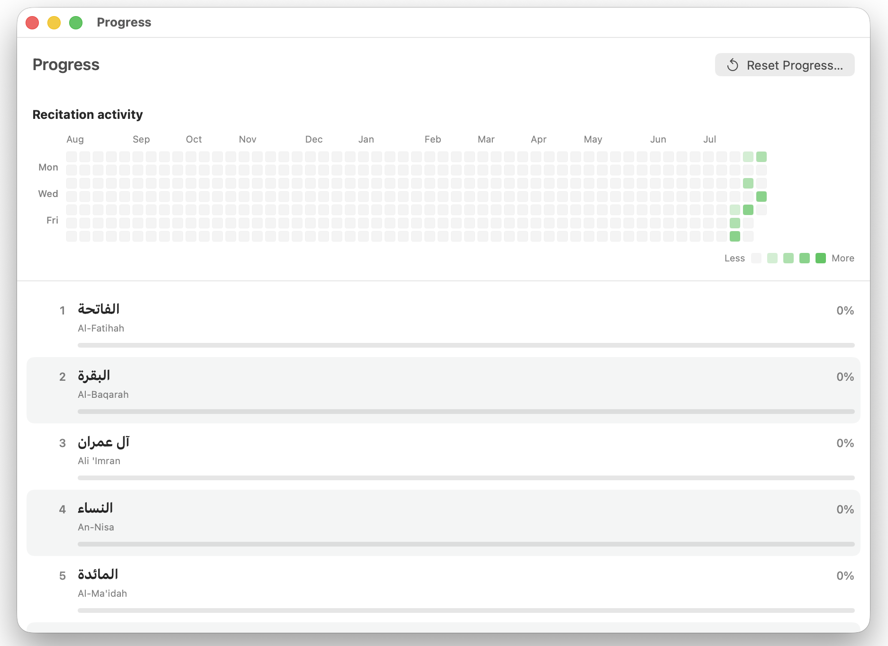
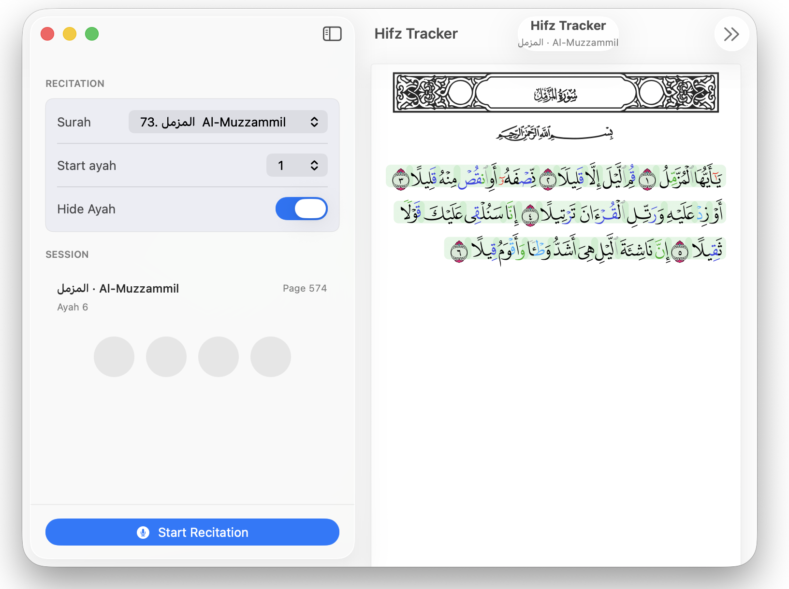

Live recitation
Built for focused hifz sessions.
Choose a surah and starting ayah, then recite while the Mushaf keeps pace with word-by-word highlights.

Private Quran memorization tracking for Mac
Practice Quran recitation with local progress tracking, live Mushaf highlights, and session history that stays on your Mac.
Live recitation
Choose a surah and starting ayah, then recite while the Mushaf keeps pace with word-by-word highlights.

Progress
See a year of recitation activity and follow your saved progress across all 114 surahs, stored locally on your Mac.

Recall practice
Hide upcoming ayat and reveal them as your recitation advances, turning the Mushaf into a focused recall check.

Hifz Tracker is designed for offline runtime use after installation. It does not persist user audio.
Requires macOS 14 or later on Apple Silicon. Download the signed DMG from GitHub Releases.
Each public build is published as a GitHub Release with version notes and the macOS download asset.